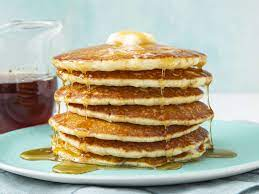

Buttermilk pancakes

Description
A very light and fluffy pancake recipe that requires fresh buttermilk, but it's the best I've ever made!
Ingredients
- Flour: All-purpose flour contains gluten, which gives the buttermilk pancakes structure and pleasant chewiness.
- Sugar: Just three tablespoons ofwhite sugar should be enough to lend subtle sweetness. Remember, you'll be adding a lot more sugar if you top the pancakes with syrup or molasses!
- Leaveners: Baking powder and baking soda act as leaveners (a substance that releases gas when mixed with other ingredients, causing the batter to rise to fluffy perfection).
- Fresh herbs: For fresh flavor, chop two tablespoons of parsley and crush one clove of garlic.
- Salt: You definitely don't want to skip adding a small amount of salt — the buttermilk pancakes will taste bland without it.
- Buttermilk: Of course, you'll need buttermilk for buttermilk pancakes! This recipe calls for three whole cups.
- Milk: Wholemilk helps create the perfect batter consistency and cuts some of the buttermilk's acidity.
- Eggs: Three whole eggs add structure and rich flavor to the buttermilk pancakes.
- Butter:Melted butter lends flavor and keeps the pancakes nice and moist.
Steps
- Mix the dry ingredients: Cook the ground meat in a skillet until browned and crumbly. Add the onion and continue cooking until it's translucent. Stir in the canned tomato products, half of the parsley, garlic, basil, 1.5 teaspoons of salt, oregano, and sugar.
- Mix the wet ingredients: Beat the buttermilk, milk, eggs, and melted butter together in a separate bowl. Do not combine the wet and dry ingredients until right before you cook the pancakes.
- Make the pancakes: Add the wet ingredients to the dry ingredients and mix with a wooden spoon or fork until the mixtures are just-blended. Scoop the batter onto a hot, oiled griddle and cook until the pancake is bubbly on the top. Flip with a spatula and cook until both sides are brown.
Back to home page